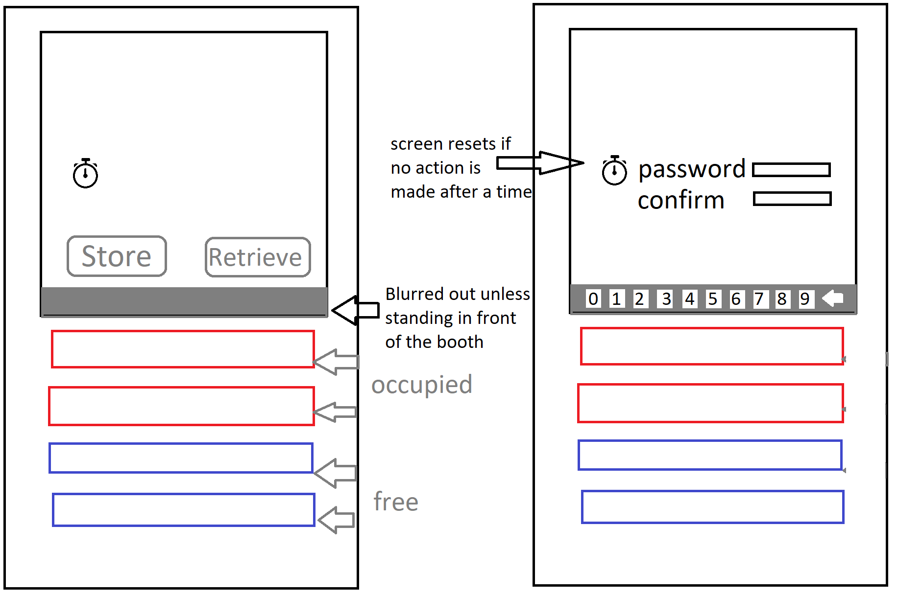
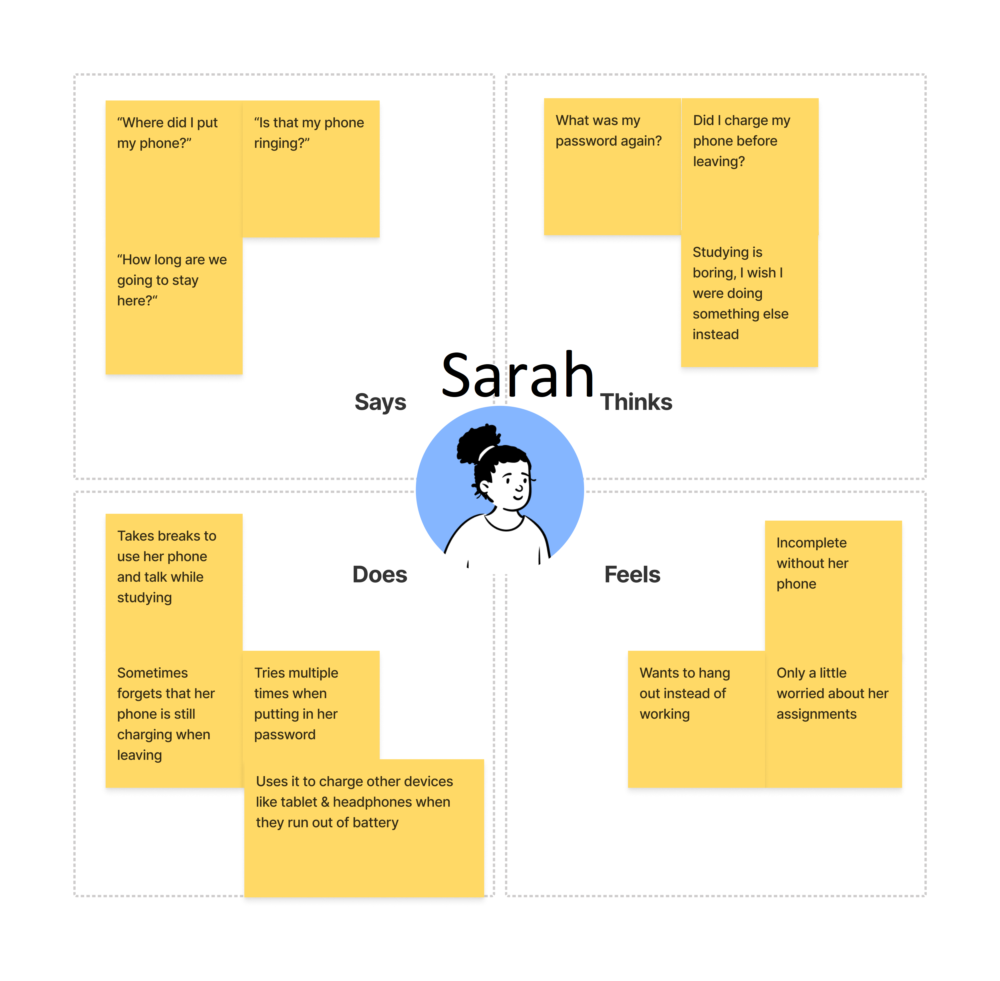
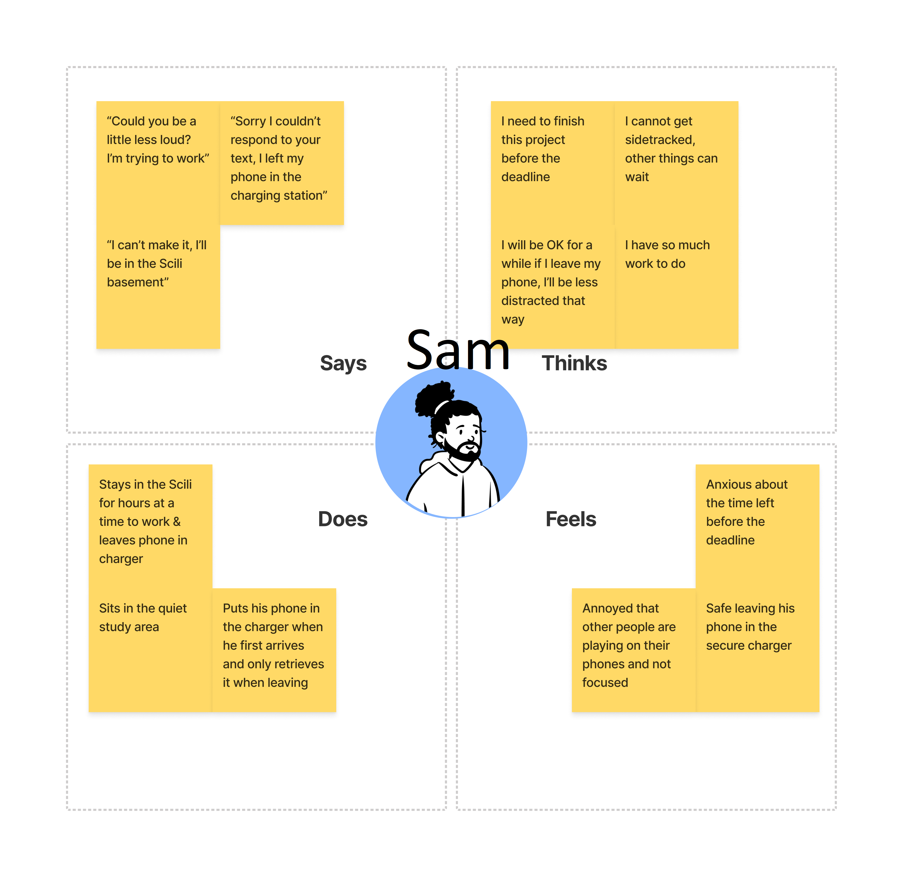
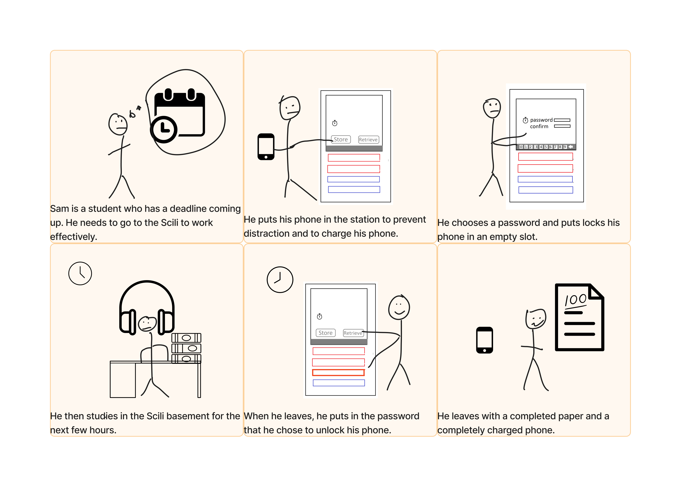

For this project, I observed the phone charging station on the bottom floor of the Scili to better understand how users interact with an interface.
Using these observations, I created personas of users.
The Interface:

I chose this interface because I often made use of it in the past and wanted to know of experiences other than my own. The interface allows the user to utilize an available charger and securely store their device while doing so. It features an interactive screen
and compartments containing charging cables that only open after a password is chosen (when charging) or correctly entered (when retrieving).
Observations:
For several weekday afternoons, I watched the station from a nearby table and recorded what users did when interacting with the interface.
Most users knew what to do at the interface and took no more than 30 seconds, either when charging or retrieving
Did not need to stop to read the screen and knew where the buttons were and what they did; little physical or emotional reaction
Users used the interface to store their phones when first entering the Scili, but when not everyone left after retrieving
Several times, someone forgot that they had set an alarm and it rang in the charger
Interview Points:
If a user was available to interview, I asked them starting questions about their time at the interface. I then asked different followup questions based on their initial responses. This made it so that the questions were not leading and did not prime the interviewee for a certain answer.
- Is this your first time using the interface? If so, was the interface easy to use?
If not, was there any part of the interface you didn't understand the first time?
- All the respondents said the interface was intuitive and had no trouble, even as a first time user.
- Did you have any suggestions as to how the interface could be improved
If not, do you feel satisfied with the design of the interface?
- No suggestions were made; respondents said they were satisfied with the interface.
- Any other comments?
- Respondents pointed out the security and convenience of the interface: they did not have to interact with another person and could leave their phone for a long time while studying
Personas:
I created two contrasting personas based on my observations to reflect the ways a user might use the interface. This was done in the Figma application using a template.

Sarah is a student who is forgetful. She works in the Scili but often stops to chat with her friends. She uses the charger because her phone is almost dead.

Sam is a student who is stressed because he has a project due soon. He is using the device to both charge his phone and to leave it out of his reach so he can focus on his work.
Storyboard for Sam:
Finally, I created a storyboard in Figma for Sam of how his interaction with the interface might go. I used observations as well as personal experiences and anecdotes to construct the story.

Conclusion:
Throughout this project, I learned firsthand the importance of observation and interviewing in design, as well as how to create a persona and corresponding storyboard.
In the process, I gained a newfound appreciation for the interface itself. Since this was my first project, it was also my first time building a page for a portfolio piece.